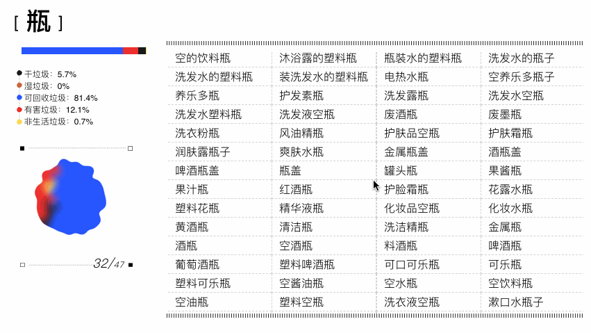

在内容部分，我们想找出词与词的关系，通过把相同词根的词融合在一起，可以看出《垃圾词汇表》，虽然拥有同一个词根，但每个词根下面可能拥有不同属性的垃圾，干垃圾、湿垃圾、可回收垃圾、有害垃圾。当它这些相同词根的“垃圾”揉成一团，带有“瓶”、“包装“、”金属“等等的词汇会是什么样子呢？
这个部分我很喜欢的一个数据可视化设计师 @NadiehBremer 写了一份关于用 svg 融合的教程 More fun data visualizations with the gooey effect 教程，可以做到让点揉在一起的效果，因为我不太会 svg，所以这个部分的效果都是我的同事承包了。
点击每个揉杂的垃圾可以看到是什么组成了它以及每个垃圾属性的比例。
